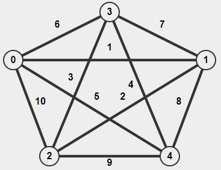

Directed
Where the edges on the node are one-way or bi-directional

Undirected
Where the edges on the nodes are bi-directional
Where the edges on the node are one-way or bi-directional
Where the edges on the nodes are bi-directional
Edges don'thave weights

Edges have weights
Where the vertices are connected in a circular fashion, where you can go back to the original node because they are connected
Where the vertices aren't connected
Edges don'thave weights
Edges have weights
Edges have weights